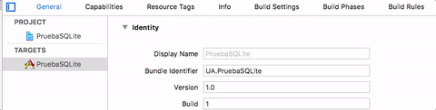

2.1 intro SQLite
Introducción a SQLite en iOS¶
En iOS no hay ningún framework estándar para trabajar con SQLite de forma nativa. Lo más habitual es usar directamente el API C de la librería. Al ser C un subconjunto de Objective-C (e interoperable con Swift) usar este API no es mayor problema, salvo por el “engorro” de tener que emplear funcionalidades de bajo nivel y tipos de datos de C (char * en lugar de String, por ejemplo).
Como vamos a ver, el API es considerablemente de nivel más bajo que los que habéis usado en Android. Es muy improbable que en el futuro aparezca en iOS un API SQLite de nivel más alto, ya que Apple recomienda el uso del framework "Core data" sobre el uso directo de SQLite (como veremos, Core Data usa habitualmente SQLite de modo interno). No obstante, para casos de uso relativamente sencillos SQLite va a ser una alternativa mucho más ligera en recursos que Core Data. Además SQLite supone una barrera de entrada bastante baja para cualquier desarrollador habituado a trabajar con SQL y bases de datos, cosa que no se puede decir de Core Data.
Configurar el proyecto¶
Para poder usar SQLite en un proyecto iOS primero hay que añadir manualmente la librería, no se añade automáticamente al contrario que otros frameworks. Seleccionamos el icono del proyecto (el azul) y en las propiedades del proyecto, opción General, al final de las opciones en Linked frameworks and libraries, (Xcode<11) o Frameworks, Libraries and Embedded Content (Xcode>=11) pulsar sobre + y añadir libsqlite3.tdb.

Para poder usar código C en un proyecto Swift necesitamos crear un archivo especial con los include necesarios. Esto es lo que se llama un bridging header.
Para crear el bridging header vamos en Xcode a File > New > File... y en las plantillas seleccionamos "header file". Le damos cualquier nombre, por ejemplo b-h.h. El contenido de la plantilla que crea Xcode no nos sirve, debemos borrarlo y sustituirlo simplemente por esto:
#include <sqlite3.h>
Ahora debemos decirle a Xcode que este .h es efectivamente un bridging header. Para eso seleccionamos el icono del proyecto (el azul) y en el apartado build settings seleccionamos All y en el cuadro de búsqueda buscamos "bridging header". Aparecerá una opción llamada Objective-C Bridging Header, que estará vacía, y en la que debemos escribir el nombre de nuestro b-h.h (si lo has metido en una carpeta dentro del proyecto tendrás que poner delante su nombre)

Este proceso es mucho más simple cuando importamos directamente código C u Obj-C a nuestro proyecto, ya que al añadir el
.co.mXcode lo detecta y crea y configura el bridging header automáticamente. No es este el caso, ya que aquí estamos usando una librería ya compilada.
Incluir la base de datos en el proyecto¶
La forma más típica de incluir la base de datos en el proyecto es copiarla al bundle de la aplicación.
No arrastres el archivo desde el finder hasta la ventana de Xcode. Se copiará en el directorio del proyecto pero no en el bundle de la aplicación
Pulsa con el botón derecho sobre el proyecto y selecciona la opción de Add files to "(nombre_del_proyecto)". En el cuadro de diálogo que aparecerá, seleccionar el archivo con la base de datos, pulsar sobre el botón Options y asegurarse de que está marcada la casilla Copy items if needed, para hacer una copia en el directorio del proyecto y no usar simplemente una referencia al archivo original.
Manejar bases de datos desde la consola¶
Aunque en el Mac no hay ninguna herramienta gráfica por defecto para gestionar bases de datos SQLite sí hay preinstalada una herramienta en línea de comandos: sqlite3.
Para abrir una base de datos, desde la terminal:
sqlite3 nombre_bd
Se abrirá un prompt donde podemos usar varios comandos, por ejemplo:
.tables, para listar tablas.schema nombre_de_tablapara ver estructura de una tabla- Se pueden teclear directamente sentencias SQL, terminándolas en `;``